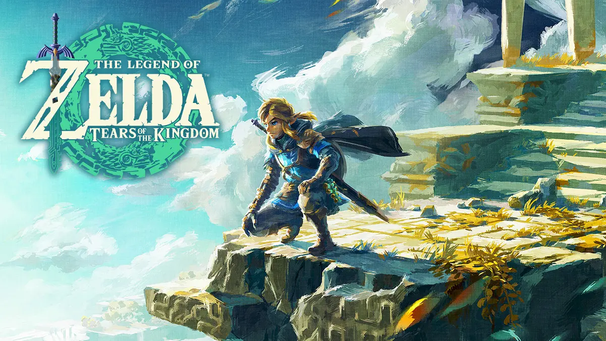

El Número 1: The Legend of Zelda: Breath of the Wild

The Legend of Zelda: Breath of the Wild es un videojuego de acción-aventura lanzado en 2017
como parte de la icónica serie The Legend of Zelda. Fue desarrollado por la filial Nintendo EPD en colaboración
con Monolith Soft y publicado por Nintendo para las consolas Wii U y Nintendo Switch. Es la decimoctava entrega de la serie
y la tercera en utilizar gráficos en alta definición. Fue lanzado el 3 de marzo de 2017 para Wii U, marcando el último juego publicado
por Nintendo para dicha consola, y simultáneamente para Nintendo Switch. visita para mas informacion
El numero 2: zelda tears of the kingdom

Tears of the Kingdom es una secuela directa de Breath of the Wild, por lo que narra la historia del reino de Hyrule
luego de que la malicia de Ganon, un aura maligna que ha contaminado el mundo, se desata. para mas informacion
El numero 3: The legend of zelda ocarina of time

The Legend of Zelda: Ocarina of Timees un juego de acción y aventuras de 1998 desarrollado y publicado por Nintendo para Nintendo 64 .
Fue lanzado en Japón y Norteamérica en noviembre de 1998 y en las regiones PAL el mes siguiente. Ocarina of Time es el primer juego de la serie The Legend of Zelda
con gráficos en 3D. para mas informacion
El numero 4: The Legend of Zelda : Majora's Mask

The Legend of Zelda: Majora's Mask (en español: La leyenda de Zelda: La Máscara de Majora), conocido en Japón como Zelda no Densetsu: Mujura no Kamen (ゼルダの伝説 ムジュラの仮面
Zeruda no Densetsu Mujura no Kamen?, lit. La Leyenda de Zelda: La Máscara de Mujura), es un videojuego de acción-aventura de la serie The Legend of Zelda desarrollado por la división
Entertainment Analysis and Development de Nintendo para la videoconsola Nintendo 64. Fue lanzado el 27 de abril de 2000 en Japón; el 26 de octubre de 2000 en Norteamérica; y el 17 de noviembre de 2000 en Europa.
1 El título vendió aproximadamente 314 000 copias en Japón durante su primera semana,2 ha saldado 3.84 millones de unidades en todo el mundo y ha cosechado críticas positivas.3 Fue relanzado para la Nintendo GameCube
como parte del recopilatorio The Legend of Zelda: Collector's Edition y en el servicio Virtual Console de Wii el 3 de abril de 2009 en la región PAL, el 7 de abril en Japón y el 18 de mayo de 2009 en Norteamérica.
Una adaptación para la Nintendo 3DS, titulada The Legend of Zelda: Majora's Mask 3D, llegó al mercado el 13 de febrero de 2015. para mas informacion
El numero 5: the legend of zelda skyward sword

The Legend of Zelda: Skyward Sword es un juego de acción y aventuras de 2011 desarrollado y publicado por Nintendo para Wii . Una remasterización en alta definición del juego.
The Legend of Zelda: Skyward Sword HD , fue codesarrollada por Tantalus Media y lanzada para Nintendo Switch en julio de 2021.
Asumiendo el papel del protagonista de la serie , Link , los jugadores navegan por la isla flotante de Skyloft y la tierra debajo de ella, completando misiones que avanzan en la historia
y resolviendo acertijos ambientales y basados en mazmorras. La mecánica y el combate, este último centrado en atacar y bloquear con espada y escudo, dependen del periférico Wii MotionPlus .
Skyward Sword , una entrada principal de la serie The Legend of Zelda , es el primer juego en la línea de tiempo de Zelda y detalla los orígenes de la Master Sword (creada a partir de la Goddess Sword),
un arma recurrente dentro de la serie. Link, residente de un pueblo flotante llamado Skyloft, se propone rescatar a su amiga de la infancia Zelda después de que la secuestran y la llevan a la superficie, las tierras abandonadas debajo de las nubes. para mas informacion